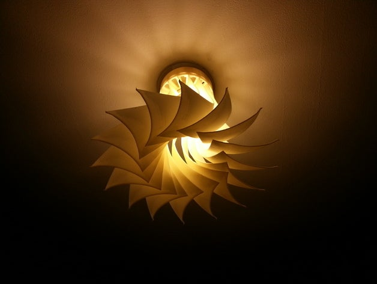

Jannis Magma
Table of Contents
1 Samples
2 generative "Biologically inspired" diffusers
https://www.thingiverse.com/thing:1883446
for diffusers:


every component can be made in a similar style
3 Tech Structure
4 ESP based mesh control network
https://github.com/gmag11/painlessMesh
https://github.com/Coopdis/easyMesh
https://github.com/martin-ger/esp_wifi_repeater
let's use lua, write a module dude
5 Expected power draw
WS2812B - https://www.seeedstudio.com/document/pdf/WS2812B Datasheet.pdf
1 LED draws max 5 mA from a 5V supply (tested)
9 leds per bulb = ~50ma max
5.1 TODO test with covers to make sure 9 led bulb is bright enough
6 Battery
3200 mah seems ok, 3 18650 cells in 3S1P configuration to get 9.6v - 12.6v
Battery cell 3 EUR - full bat is 9 EUR
roughly,
7 Solar panel
Solar panel ~10W seems ok
8 Estimates
| mA/LED | LED/Bulb | Bulbs | Battery (mAh) | Solar (mA) | Total Draw (mA) | Working Hours | Charging Hours |
|---|---|---|---|---|---|---|---|
| 5 | 9 | 6 | 3200 | 10000 | 270.0 | 12 | 5 |
| 5 | 9 | 12 | 3200 | 10000 | 540.0 | 6 | 5 |
| 5 | 12 | 6 | 3200 | 10000 | 360.0 | 9 | 5 |
| 5 | 15 | 6 | 3200 | 10000 | 450.0 | 7 | 5 |
9 modular and interchangable connectors
check GX16 standard,
- both solar and battery have standard input/output connectors, so they can be chained, or replaced with a grid/centralized source
- dark outside? chain some solar panels
- need more capaciy? chain batteries
- running on the grid? get rid of solar and batteries, connect grid directly
think about flexibility on numbers of bulbs with some top limit (12?) (autodetect strip length?)
GX16 for bulbs as well (6 pin)?
- since we are running on a bus, it' possible to drag one cable far and then split it into multiple cables for multiple bulbs wih some Y or X connectors
- maybe controller has only one connector, we use spliters to distribute
10 Software
- 3d position map of bulbs for running spacial algorithms
- explore possibility of automatically triangulating control nodes based on signal strength
- system wide battery monitoring via voltage measuring on controllers